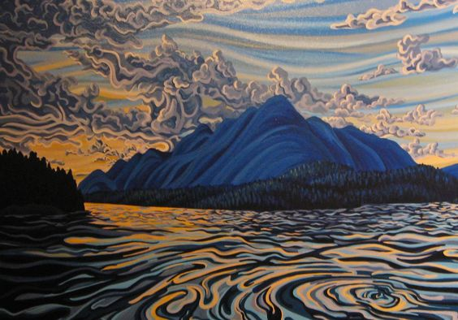

Art Trends: A Glimpse into the Future
Art, a dynamic and ever-evolving field, is constantly influenced by societal changes, technological advancements, and individual creativity. As we delve into 2024, let’s explore some of the trending topics in the art world.
Neo-Surrealist Art has garnered notable attention in recent times. This contemporary twist on the traditional surrealist movement merges dreamlike aesthetics with modern-day subjects, serving as a conduit between the subconscious and reality. Artists adeptly employ this style to offer poignant commentary on pressing contemporary issues, thus rendering it a potent tool for social critique. With its ability to challenge perceptions and provoke thought, Neo-Surrealist Art captivates audiences and invites them into a realm where imagination knows no bounds.
The advent of Digital Art has revolutionized artistic expression. Embracing everything from digital painting to intricate 3D modeling, this form of art is rapidly gaining popularity. Artists harness technology to stretch the boundaries of creativity, yielding breathtaking and avant-garde works. Moreover, the democratization of art is propelled forward as digital tools become increasingly accessible and affordable. Digital art galleries and online platforms provide artists with new avenues for exposure, enabling them to reach global audiences with ease. This digital revolution not only expands the reach of artists but also transforms the way audiences interact with and consume art, blurring the lines between the physical and virtual worlds.
Art Therapy is gaining recognition for its therapeutic benefits. Utilizing art-making as a means of expression, it is being employed in various settings ranging from hospitals to schools. Art therapy provides individuals with a platform to articulate their emotions and navigate through stress, trauma, and illness, thereby fostering healing and well-being. Through the creative process, individuals gain insight into their thoughts and feelings, empowering them to confront challenges and embark on a journey of self-discovery. As the importance of mental health awareness grows, art therapy emerges as a valuable tool for promoting emotional well-being and resilience.
Moving forward, these trends are poised to evolve and leave an indelible mark on the future of art. They serve as reflections of our ever-changing world, underscoring the capacity of art to engage with, adapt to, and influence society at large. As artists continue to push boundaries and explore new frontiers, the art world remains a vibrant and dynamic landscape, ripe with possibility and innovation.